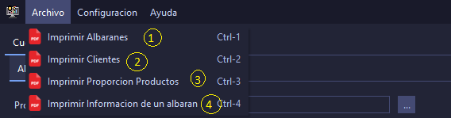

Barra de Herramientas
Esta barra de herramientas esta situada en la parte superior en programa y comprende los menus (archivo, configuracion, ayuda)
desde esta ventana podemos hacer los informes pertinentes para cada apartado

En este menu de nos despliega un conjunto de informes los cuales nos ofrecen informacion util como los producto, clientes o albaranes
- Imprime un reporte con todos los albaranes
- Imprime un reporte con todos los Clientes
- Imprime un Informe con la proporcion de cada producto en el almacen
- Imprime un reporte con un albaran en concreto
- Muestra la configuracion de la base de datos
- Muestra el panel para configurar la apariencia
- Muestra el panel para ajustar el lenguaje
- Muestra una tabla con todos los correos electronicos que tengamos
- Muestra el panel para ajustar los datos de la empresa
- Muestra los usuarios que pueden acceder a la aplicacion
- Configuracion/Base de datos
- Activa el guardado de los datos en local
- Activa el guardado de datos online y muestra el panel de configuracion
- Especificar la direccion del servidor de la base de datos
- Especifica el nombre de la base de datos
- Especifica el puerto por el que escucha el servidor
- Especifica el nombre de usuario de la base de datos
- Especifica la contraseña del usuario de la base de datos
- Permite probar la conexion antes de aplicar los cambios
- Aplica todas las configuraciones modificadas en todos los paneles
- Permite selecciona el tema de la aplicacion
- Aplica las configuraciones de todos los paneles
- Permite selecciona el lenguaje de la aplicacion
- Aplica las configuraciones de todos los paneles
- Configuracion/Cuentas de correo
- Muestra un menu para agregar un correo
- Muestra un menu para Eliminar un correo
- Tabla que muestra todos los correos
- Aplica todas las configuraciones modificadas en todos los paneles
- Configuracion/Datos empresa
- habilita los datos de empresa y muestra el panel correspondientes
- Especifica el nombre de la empresa
- Especifica la duracion de la empresa
- Especifica el Telefono de la empresa
- Especifica el Email de la empresa
- Muesta un menu para selecciona el logo de nuestra empresa
- Muestra la direccion de nuestro logo
- Muestra una preview del icono
- Aplica las configuraciones de todos los paneles
- Agrega un usuario para el inicio del programa
- Elimina un usuario
- Muestra todos los usuarios
- Aplica las configuraciones de todos los paneles
Esta opcion de menu abre esta venta de ayuda donde podras encontrar informacion sobre la utilizacion de la apliacacion